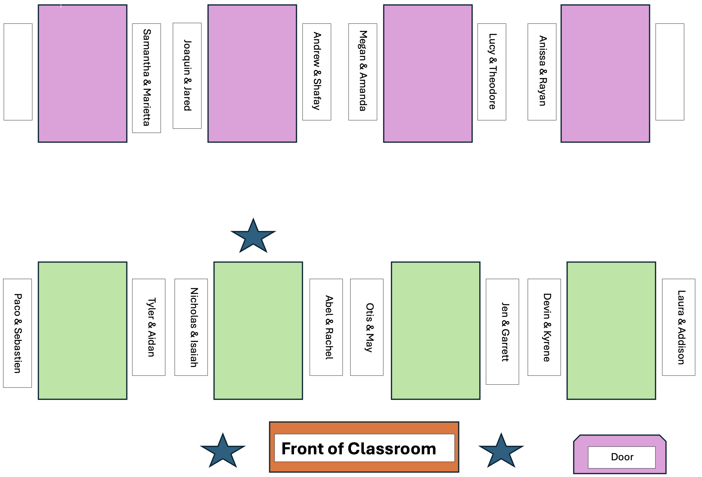

knitr::include_graphics("https://github.com/rstudio/hex-stickers/blob/main/thumbs/lubridate.png?raw=true")
lubridate to Work with DatesToday we will…
Revisions are due by Friday
. . .
Any problem receiving a “Growing” can be revised and submitted for additional feedback.
. . .
Revisions must be accompanied by reflections on how your learning progressed.
Make sure your feedback follows the code review guidelines.
Insert your review into the comment box!
. . .
You will create a Midterm Portfolio, with code covering the learning targets we have covered thus far in the course.
. . .
. . .
git and sign-up for a GitHub accountWhen parsing dates and times, we have to consider complicating factors like…
lubridateConvert a date-like variable (“May 8, 1995”) to a date or date-time object.
Find the weekday, month, year, etc from a date-time object.
Convert between time zones.
knitr::include_graphics("https://github.com/rstudio/hex-stickers/blob/main/thumbs/lubridate.png?raw=true")
The lubridate package installs and loads with the tidyverse.
date-time ObjectsFrom individual components:
make_date(year = 1995, month = 05, day = 08)[1] "1995-05-08". . .
From a string:
mdy("August 29, 1991")[1] "1991-08-29". . .
With a time zone:
dmy("29-August-1991",
tz = "America/Denver")[1] "1991-08-29 MDT"dmy_hms("29-August-1991 9:32:12",
tz = "America/Denver")[1] "1991-08-29 09:32:12 MDT"as_datetime(2023-02-6)[1] "1970-01-01 00:33:35 UTC"my_date <- 2023-02-6
my_date[1] 2015What’s wrong here?
. . .
Make sure you use quotes!
date-time Componentsbday <- ymd_hms("1989-01-14 12:03:12",
tz = "America/Denver")
bday[1] "1989-01-14 12:03:12 MST". . .
year(bday)[1] 1989month(bday)[1] 1day(bday)[1] 14hour(bday)[1] 12wday(bday)[1] 7wday(bday,
label = TRUE,
abbr = FALSE)[1] Saturday
7 Levels: Sunday < Monday < Tuesday < Wednesday < Thursday < ... < Saturdaydate-time ObjectsDoing subtraction gives you a difftime object.
difftime objects do not always have the same units – it depends on the scale of the objects you are working with.
today() - mdy("01-14-1989")Time difference of 13453 days. . .
How long did it take me to type this slide?
begin <- mdy_hms("10/13/2025 6:40:34")
finish <- mdy_hms("10/13/2025 6:43:11")
finish - beginTime difference of 2.616667 minsDurations will always give the exact number of seconds.
as.duration(
mdy_hms("10-16-2025 12:10:00", tz = "America/Los_Angeles") -
mdy_hms("01-14-1989 12:03:12", tz = "America/Denver")
)[1] "1159834008s (~36.75 years)". . .
Periods give more approximate, human readable times.
as.period(
mdy_hms("10-16-2025 12:10:00", tz = "America/Los_Angeles") -
mdy_hms("01-14-1989 12:03:12", tz = "America/Denver")
)[1] "13424d 0H 6M 48S"We can also add time to date-time objects:
days(), years(), hours(), weeks() etc. will add a period of time.When is is my 99th birthday?
mdy("01-14-1989") + years(99)[1] "2088-01-14"Suppose American Airlines requires members to travel within 4 weeks before or after their birthday to earn a “Birthday Bonus Flight.”
. . .
Well, we first need to make an interval of time around my birthday.
bday [1] "1989-01-14 12:03:12 MST"bonus_flight_window <- interval(
bday - weeks(4),
bday + weeks(4)
). . .
Then I can check if today is within this interval.
today() %within% bonus_flight_window[1] FALSE…are complicated!
Specify time zones in the form:
. . .
What time zone does R think I’m in?
Sys.timezone()[1] "America/Los_Angeles"You can change the time zone of a date in two ways:
x <- ymd_hms("2025-10-13 18:00:00",
tz = "Europe/Copenhagen"). . .
with_tz()
Keeps the instant in time the same, but modifies the representation based on the new time zone
x |>
with_tz(tzone = "America/Los_Angeles")[1] "2025-10-13 09:00:00 PDT"x |>
with_tz(tzone = "Asia/Kolkata")[1] "2025-10-13 21:30:00 IST"force_tz()
Changes the instant in time by forcing a time zone change.
x |>
force_tz(tzone = "America/Los_Angeles")[1] "2025-10-13 18:00:00 PDT"x |>
force_tz(tzone = "Asia/Kolkata")[1] "2025-10-13 18:00:00 IST"When you read data in or create a new date-time object, the default time zone (if not specified) is UTC (Universal Time Coordinated)*.
*UTC is the same as GMT (Greenwich Mean Time) which is where Iceland is located
. . .
So, make sure you specify your desired time zone!
x <- dmy("20/11/1993")
tz(x)[1] "UTC"x <- force_tz(x,
tz = "America/Los_Angeles")
tz(x)[1] "America/Los_Angeles"
None of us have all these abilities. Each of us has some of these abilities.
During the Practice Activity, you are not permitted to use Google or ChatGPT for help.
You are permitted to use:
lubridate cheatsheet, andSubmit the name of the thief to the Canvas Quiz.

The partner who has broken the most bones starts as the Talker!
The partner who has broken the most bones starts as the Talker!